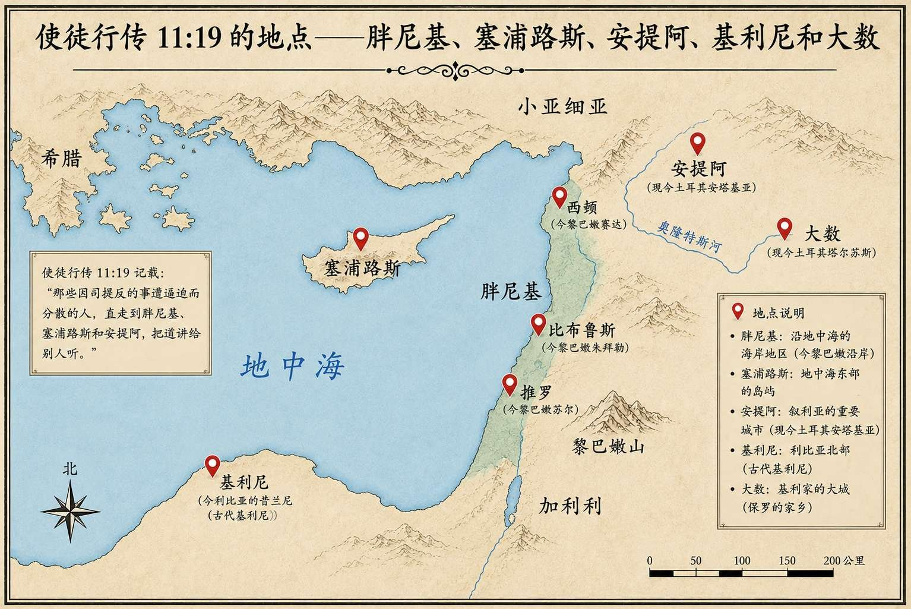

神所洁净的，你不可当作俗物。 使徒行传 11:9
本次查经以使徒行传第 11 章为核心，系统梳理了彼得向耶路撒冷教会解释其往外邦人哥尼流家传福音一事的经过，以及福音如何借着逼迫从耶路撒冷向安提阿等外邦地区扩展。讨论涵盖犹太人对外邦人的文化偏见与宗教成见、神借异象三次纠正彼得的过程、巴拿巴与扫罗在安提阿的门徒训练事工，以及"基督徒"一词的历史起源与原始含义。全程由中英双语交替进行，LJM 负责主讲，iPhone（译者）负责中文翻译与补充阐释，Dr 提出问题参与互动。
彼得向耶路撒冷解释外邦人信主之事
第 10 章中，彼得前往外邦人百夫长哥尼流家传福音，哥尼流全家领受圣灵并得救；这在犹太文化与宗教传统中属于严重的禁忌——犹太人不得进入外邦人家中，更不得与其同桌吃饭。彼得返回耶路撒冷后，部分"奉割礼的门徒"指责他进入未受割礼之人的家并与他们一同吃饭。这一指责根源于犹太人对外邦人长期积累的种族偏见与文化隔阂，而非神的律法本身的要求：犹太人自视为神的选民，从摩西时代至大卫王时代形成了严格的族群传统，婚嫁、交往均限于本族，对外邦人存在根深蒂固的歧视心态。此事件因此具有"划时代意义"——圣灵降临在外邦人身上，标志着救恩突破民族边界，是神救赎计划向全人类展开的关键节点。
神三次赐下异象：打破彼得的成见
彼得在约帕城祷告时见到异象——一块大布从天降下，内有各种洁净与不洁净的动物，神命令他"起来宰了吃"；彼得以"从来没有吃过俗而不洁净之物"为由拒绝。神在第 9 节回应说——这是本段最核心的神学声明——"神所洁净的，你不可当作俗物。"其象征意义并非关于饮食规条本身，而是宣告神已接纳外邦人，人不可再以"不洁净"定义神所分别为圣之人。在犹太文化语境中，"三次"代表确定性与完整性（类似七次），表明这是神明确无误的旨意，而非偶然或巧合；也可能实际上不止三次，强调神为突破彼得根深蒂固的成见所付出的持续努力。彼得并非在异象降下时立刻完全明白，而是经历了一个渐进的认知转变过程——从房顶祷告时的困惑，到亲眼目睹圣灵降临在外邦人身上，才真正领会神启示的深意。神在利未记中明确列出可吃与不可吃的动物（如猪肉因不反刍而被列为不洁净），犹太人在此基础上又衍生出多达六千余条行为规条，使律法主义极度繁重，彼得的抵触正是这一文化积淀的体现。
文化偏见的普世性反思
LJM 引导学员思考：在自己的文化背景中，谁是我们心中的"外邦人"或"不洁净之人"？就如法利赛人问耶稣"谁是我的邻舍"，耶稣以好撒玛利亚人的比喻回答——撒玛利亚人在犹太人眼中正是"不可接触之人"。译者以宁夏银川为例——当地汉族基督徒可能对回族（尤其是中宁、同心等地的回族）存在偏见，认为他们"不可能信主"；这种先入为主的判断正是需要被神纠正的拦阻。核心原则是：任何人都值得听福音，无论是普通人、社会精英，还是监狱中的服刑人员；不可成为拦阻神实现其救赎计划的人。即便是真正重生的基督徒，也可能因文化背景、个人成见或历史传统而需要神借着话语持续纠正与更新。
彼得的谦卑与见证策略
在早期教会中，彼得是公认的领袖之一——五旬节时他站起来讲道，在使徒行传中多次扮演核心角色，拥有相当的属灵权威。他完全可以凭借权柄直接宣布"外邦人也可受洗"，强制要求众人接受，但他选择耐心解释、逐一陈述经过，体现出真正的谦卑与爱心。按旧约律法，作证只需两人，但彼得带了六位弟兄同往哥尼流家，"多于足够"的见证人数量，是因为这件事太过不可思议，仅凭他一人的陈述难以令人信服。彼得手握权柄却不滥用，反而倚重他人的见证；这提醒信徒：无论身处何种权位，都当保持谦卑、以理服人，而非以权压人。
哥尼流：好人也需要救恩
哥尼流是罗马百夫长，家境富裕，圣经描述他"虔诚、敬畏神、多多周济百姓、常常祷告"，在神眼中是一个诚实寻求神的人。正因他对神的渴慕与好品格，神才特别借天使向他显现，指引他派人去找彼得；这表明神鉴察人心，知道一个人是否真正预备好接受救恩。但关键的神学要点是：哥尼流的祷告生活与善行是"好的条件"，但不足以使他得救——宗教背景、道德品行、社会地位均无法替代个人对耶稣基督的信仰与接受。无论是普通人（"我没杀人放火"）、哲学家、宗教领袖（拉比），还是在大学教授哲学或圣经的学者，若未个人接受耶稣基督，都同样需要救恩。译者将这一原则延伸到中国文化语境：老子、庄子等被视为圣人的历史人物，以及佛教信仰者，同样适用这一原则——外在行为与哲学智慧不能替代对基督的个人信仰。
福音的地理扩展：从耶路撒冷到安提阿
司提反殉道后耶路撒冷爆发逼迫，门徒四散，大多数人离开耶路撒冷；表面上是坏事，实则是神借此将福音向外推进的计划——神能使坏事成就好的目的。LJM 结合地图讲解了福音扩展的三个层次：
- 第一层：耶路撒冷及周边——纯犹太人区域。
- 第二层：腓尼基、塞浦路斯、西顿等地——犹太人与外邦人混居地带，类似撒玛利亚的混合文化区域。
- 第三层：安提阿——完全的外邦人（希腊语）世界，标志着福音彻底突破民族边界。
安提阿是第一个真正意义上的外邦人教会，也是后来使徒保罗宣教旅程的基地；"基督徒"这一称谓正是从安提阿开始使用的。

地图右侧的大数（Tarsus）是使徒保罗的家乡；北非左下角的基利尼（Cyrene）是耶稣背十字架时被抓来帮忙的西门的家乡；地中海中央的塞浦路斯岛则是巴拿巴的家乡。
巴拿巴：领袖典范与保罗的伯乐
第 24 节描述巴拿巴"是个好人，被圣灵充满，大有信心"，名字含义为"劝慰之子（鼓励者）"，品格与恩赐使他成为差往安提阿的最合适人选。当安提阿外邦人教会持续增长，巴拿巴意识到需要扫罗的恩赐与呼召，专程绕道大数将扫罗带来同工。扫罗当时因曾逼迫基督徒，虽已信主并向众使徒作了解释，但仍有许多人对他存有疑虑，他处于信徒群体的边缘；巴拿巴是少数完全信任他的人之一。巴拿巴的领袖度量体现在：能识别他人的恩赐，不因潜在竞争而嫉妒或压制；充分信任并托举一个被众人质疑的人，给扫罗机会发挥所长；早先已作为桥梁将扫罗介绍给耶路撒冷的使徒们。扫罗至少掌握希腊语、希伯来语及家乡语言（大数当地语言），这使他极适合在多元文化的外邦人世界中从事宣教工作。
传福音与门徒训练：两者缺一不可
巴拿巴与扫罗在安提阿整整一年，与教会一同聚集，教训了许多人；新信徒不仅需要听福音，还需要系统学习圣经、了解耶稣是谁、明白福音的内涵、学习如何过基督徒生活。核心原则是：传福音与门徒训练必须同行——传福音将人带到基督面前，门徒训练帮助人在基督里成长；只做其中一项是不够的。译者以"授人以鱼不如授人以渔"这一中国谚语生动阐释：带人信主只是"领他到池塘边"，还需"教会他怎么钓鱼"——即持续的门训陪伴与属灵成长辅导。安提阿教会因此面临诸多实践性问题，如祭祀过的食物能否食用、教会如何管理、如何照顾有需要的成员等，这些都需要时间教导与引导。
"基督徒"称谓的起源与含义
门徒被称为"基督徒（Christians）"是从安提阿开始的，这是该词在历史上首次出现。字面意思为"基督的跟随者"或"效法基督的人"，涵盖效法耶稣的爱心、行为、价值观等各个方面，而非单指宗教身份标签。这个称谓在当时并非中性词，而是带有嘲讽与侮辱意味——因为耶稣是以被钉十字架的方式死去，在许多人眼中是罪犯或被咒诅者，称人为"基督徒"等同于嘲笑他们跟随一个"罪犯的信徒"。彼得在《彼得前书》4 章 16 节中明确表示，因"基督徒"这个名被辱骂时不应羞耻——这一声明本身印证了该词在当时确实是用来羞辱信徒的。今天"基督徒"已是一个中性乃至正面的身份称谓，但译者指出，信徒更喜欢用"耶稣的跟从者"来表达这一身份的本质内涵。